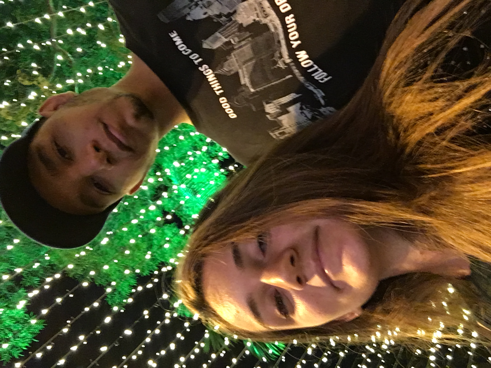

Por estarmos dentro da cidade de Florianópolis, resolvemos pegar um Uber para a rodovia BR 101 em Palhoça, um local com facilidade de pegar carona para o nosso próximo destino. O primeiro ponto, próximo da loja Havan, não deu muito certo. Nos deslocamos para um ponto mais próximo do acostamento, onde obtivemos êxito. Uma dica seria não ficar próximo de uma subida, é mais difícil parar um automóvel, recomendamos pegar em um local com acostamento plano.
Sr. Odair, 45a, agradável, simpático. Já ofereceu várias caronas, nos aconselhou a pegar carona no acostamento em local plano, em vez de um local com subida/descida; possui uma esposa e 2 filhos. Não teve oportunidade de estudar, mas gostaria de fazer uma faculdade. Possui uma rotina exaustiva com jornada de 12h de viagem (3x na semana), reivindica férias há mais de 3 anos para passar o natal e ano novo com a família. Gosta de oferecer carona justamente pela viagem ser solitária, então aproveita para ter alguma companhia durante o percurso. Diz que só oferece carona para aquele que oferecer boa impressão, preferencialmente para mulheres e casais, além de estar bem apresentável. Já presenciou vários acidentes na estrada e acabou se acostumando com esta rotina; é católico; aparentemente hígido. Contraiu covid-19 em junho deste ano por meio da esposa (no coral da igreja), todos testaram positivo pelo teste PCR. Procedente de Curitiba, seu trajeto do trabalho é de PR - RS, transporta peróxido de oxigênio, seu caminhão possui 9 eixos. Só pode transitar 80 km/h.
Seu Odair nos deixou próximo da entrada de Criciúma. Pegamos um Uber para entrar na cidade. Chegando na cidade, procuramos um lugar para acamparmos. A primeira tentativa foi em um posto de gasolina, mas os postos dentro da cidade geralmente não aceitam fazer camping, então resolvemos procurar um parque ou uma praça. Ficamos em uma praça no centro da cidade, mas não sabíamos se poderia montar a barraca devido ao movimento constante de viaturas que rodeavam a praça. Mas por não encontrarmos um lugar melhor de última hora, optamos por montar a barraca ali mesmo. Por ser na época do natal e ter grande contingente de pessoas, esperamos diminuir o movimento para podermos montar a barraca.
Uma dica seria tentar chegar o mais cedo possível para aproveitar a cidade que quer conhecer e retornar para os postos de gasolina próximos da rodovia, caso queira acampar, ou procurar um local de camping dentro da cidade. Tivemos uma experiência não muito agradável, por receio de estarmos muito expostos e por alguém nos abordar. Houve um momento em que um homem se aproximou da barraca e ficou por algum tempo nos observando e foi embora (que cagaço!). Por estarmos dentro da barraca, só vimos a silhueta dele.
Outra dica seria sempre que entrar em uma cidade nova, procurar por um Mc Donald’s, pois é um lugar que há banheiro e tomada e, às vezes, Wi-fi gratuito, além de permanecer no local sem ninguém incomodar.